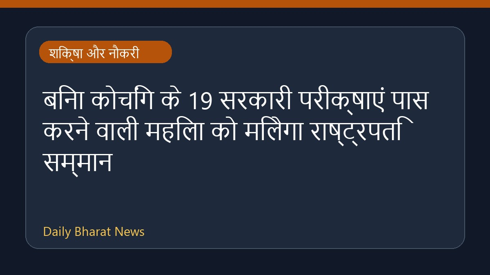

बिना कोचिंग के 19 सरकारी परीक्षाएं पास करने वाली महिला को मिलेगा राष्ट्रपति सम्मान

एक महिला ने बिना किसी कोचिंग की सहायता के 19 सरकारी परीक्षाएं पास करने में सफलता हासिल की है। इस उल्लेखनीय उपलब्धि के बाद अब वह राष्ट्रपति सम्मान प्राप्त करने के लिए तैयार हैं। यह जानकारी हाल ही में मीडिया रिपोर्ट्स के माध्यम से सामने आई है। इस सफलता ने उन उम्मीदवारों के लिए एक मिसाल कायम की है जो सीमित संसाधनों के साथ प्रतियोगी परीक्षाओं की तैयारी करते हैं। इस विषय में अभी अन्य विस्तृत जानकारियां उपलब्ध नहीं हैं।
मूल स्रोत: Education News Sources
Woman clears 19 govt exams without coaching, now set for Presidential honour - India Today ↗
Woman clears 19 govt exams without coaching, now set for Presidential honour - India Today ↗